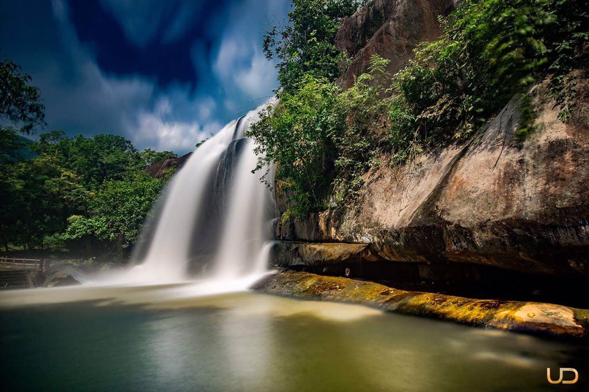
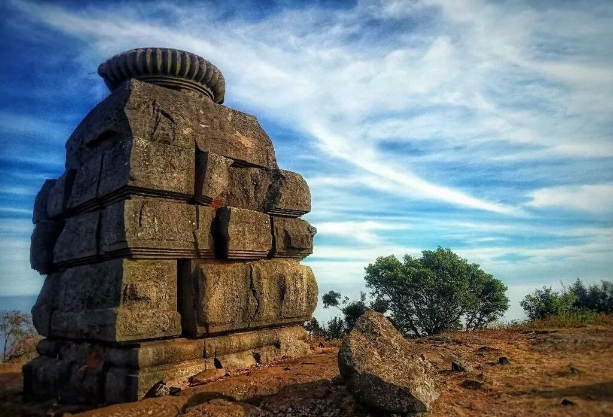
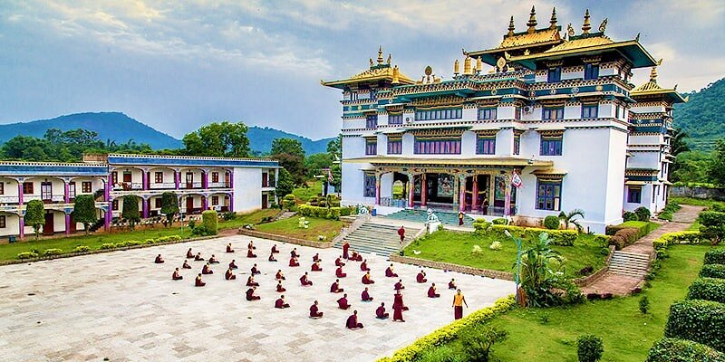
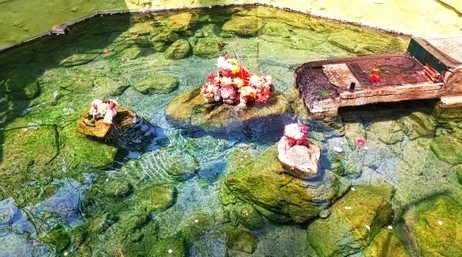

Places to Visit
Paralakhemundi
Paralakhemundi, shortly known as Parala, is the district headquarters of Gajapati district and one of the oldest municipalities established in 1885, in the Indian state of Odisha. The majority of the people in the town speak Odia. The city and the district share its boundaries with Andhra Pradesh. The adjacent town of Pathpatnam is separated by the River Mahendra Tanaya. In the later medieval period, it became the capital of the Paralakhemundi Estate of the Eastern Ganga dynasty kings of the Khemundi branch. The town is well known for being an ancient cultural center of Odisha and the birthplace of noted personalities including poet Gopalakrusna Pattanayaka, statesman Krushna Chandra Gajapati Narayan Deo, lexicographer Gopinatha Nanda Sharma, and historian Satyanarayana Rajguru. This town is also known for its century-old temples, monasteries, palaces, and heritage buildings. Read more
Gajapati district has been named after Maharaja Sri Krushna Chandra Gajapati Narayan Dev, the Raja Sahib of Paralakhemundi estate. He was honored as the 1st Prime Minister of the State of Odisha after it was created on 1 April 1936, remembered for his contribution to the formation of a separate Odisha State and the inclusion of Paralakhemundi estate in Odisha. Gajapati district came into being with effect from 2 October 1992. Prior to this, it was a part (Sub-Division) of Ganjam district. Read more
Gajapati Palace
Distance from Venue: 8.8 KMMaharaja Krushnachandra Gajapati, the erstwhile ruler of Paralakhemundi State near the Andhra – Odisha border, was one of the greatest luminaries of Odisha throughout its history. A visionary and passionate soul for art and heritage, Maharaja Krushnachandra Gajapati was one of the first Odias to initiate the movement for separate statehood for the Odia-speaking people. The seeds for such a noble initiative were germinated in the Gajapati Palace of Paralakhemundi. Today, the palace, though degraded with the ravages of time, still stands as an architectural splendor of the colonial past. Read more
View on Google Maps
Gandahati Waterfall
Distance from Venue: 19.6 KMThe Gandahati waterfall is a well-liked natural landmark. It is a popular tourist destination in Odisha’s Gajapati District that sees a lot of traffic in the winter. This waterfall is well-known for its sparkling cascade, which flows consistently and year-round. Visitors from all surrounding places have been drawn to it by its beautiful charm amidst the forest cover. Read more
View on Google Maps
Mahendragiri (Odisha)
Distance from Venue: 46.2 KMMahendragiri, located in Gajapati district, is a renowned tourist and religious site in eastern Odisha. This peak, part of the Eastern Ghats, rises to 1,501 meters (4,976 ft) above sea level. According to Hindu mythology, Lord Parshuram meditated on Mahendragiri and received the divine Parsu (double axe) from Lord Shiva. The site offers breathtaking views and is surrounded by lush greenery and historical temples. Read more
View on Google Maps
Padmasambhava Mahavihara Monastery
Distance from Venue: 73 KMThe Padmasambhava Mahavihara monastery at Chandragiri, near Mohana of Gajapati District of Odisha is the largest Buddhist Monastery in South Asia. It is named after Acharya Padmasambhava, an Odisha born monk who spread Buddhism in Tibet in 7th century. There are around 200 monks residing here. It is a beautiful religious and peaceful place to visit in Ganjam-Gajapati district, Odisha. Read more
View on Google Maps
Taptapani
Distance from Venue: 77.9 KMTaptapani is famous for its hot sulfur water spring. The name “Taptapani” also suggests that. “Tapta” means hot and “pani” means water. The hot water from the natural spring of Taptapani are attributed with medicinal properties and can be bathed in at the pond created next to the hot spring. The hot spring is situated at the eastern slope of the eastern ghat at a crest of the hill with in the lush green forest having wide range of flora and fauna. Read more
View on Google Maps